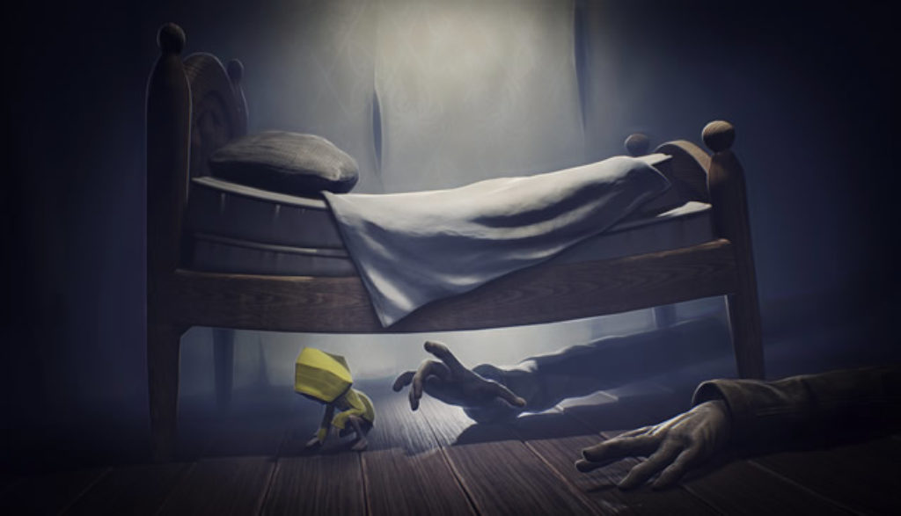
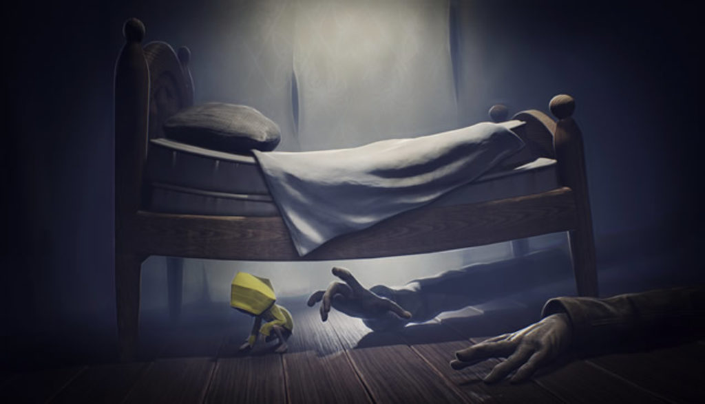

Little Nightmare est un jeu vidéo de plates-formes et de réfléxion développé par Tarsier Studios, qui est sorti le 28 avril 2017 sur Windows, PS4, Xbox One et Nintendo Switch. Le jeu suit l'aventure de Six, une petite fille affamée, qui doit s'échapper d'un mystérieux navire dont les habitants sont monstrueux. Le jeu a reçu des critiques positives à sa sortie, les critiques louant l'atmosphère, les graphismes et le son, mais en critiquant le système de points de contrôle du jeu et sa courte durée. Six, une petite fille de 9 ans, vêtue d'un ciré jaune, se réveille après avoir rêvé d'une mystérieuse geisha : la Dame. Elle se trouve à bord d'un sinistre navire : l'Antre (the Maw en anglais) et ne dispose que d'un briquet pour l'explorer. Durant sa progression, Six rencontre les Nomes, de petites créatures espiègles qui l'observent furtivement. La protagoniste découvre également une prison, où sont détenus des enfants. Six éprouve par moments de violents excès de faim. Un enfant captif finit par lui lancer un morceau de pain, lui permettant de se nourrir. Six doit ensuite échapper au Concierge, un homme difforme et aveugle, aux bras démesurés. Une fois débarrassée de lui en lui tranchant les bras, une nouvelle crise de faim la conduit à dévorer un rat vivant. Le jeu a eu une note de 8/10 sur Gamekult et 15/20 sur Jeuxvideo.com.
Voici le personnage principal:

Six (A hungry child) est un personnage androgyne beaucoup plus petit que les personnages adultes du jeu, faisant à peine le quart de leur taille avec des membres extrêmement minces. Sa morphologie est similaire à celles des autres enfants de l'Antre.
Si vous voulez en savoir plus vous pouvez regarder les images et le trailer du jeu
Voici quelques images du jeu:

 

Si vous voulez voir des fanart sur le jeu
Voici quelques fanart du jeu:
Voici le trailer du jeu :
Si vous voulez acheter le jeu cliquez sur les liens si-dessous